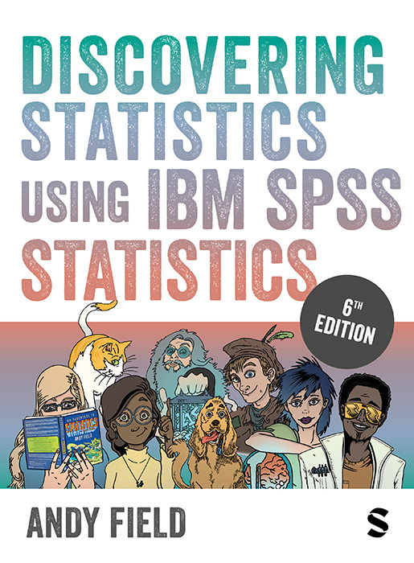

Winner of the British Psychological Society Book Award 2007

Resources
Inspiring quotes
Here are some quotes from the publishers about various editions of the book:
“In this brilliant new edition Andy Field has introduced important new introductory material on statistics that the student will need and was missing at least in the first edition. This book is the best blend that I know of a textbook in statistics and a manual on SPSS. It is a balanced composite of both topics, using SPSS to illustrate important statistical material and, through graphics, to make visible important approaches to data analysis. There are many places in the book where I had to laugh, and that’s saying a lot for a book on statistics. His excellent style engages the reader and makes reading about statistics fun’” - David C Howell, Professor Emeritus, University of Vermont
“The new edition of Field’s textbook confirms its place as the best statistics text for undergraduate social science students. It provides support for those less confident about statistical analysis whilst having sufficient depth that it will still be valuable to more mathematically experienced people. There is a focus throughout on the practical aspects of data analysis and interpretation whilst at the same time emphasizing the importance of rigour and a good understating of theory essential reading” Dr Ian Walker, Department of Psychology, University of Bath
Description
This is what the publishers, SAGE, have to say on their web site (I don’t write this guff …):
With its unique combination of humour and step-by-step instruction, this award-winning book is the statistics lifesaver for everyone. From initial theory through to regression, factor analysis and multilevel modelling, Andy Field animates statistics and SPSS software with his famously bizarre examples and activities.
Features:
All the online resources above (video, case studies, datasets, testbanks) can be easily integrated into your institution’s virtual learning environment or learning management system. This allows you to customize and curate content for use in module preparation, delivery and assessment.
- Flexible coverage to support students across disciplines and degree programmes
- Can support classroom or lab learning and assessment
- Analysis of real data with opportunities to practice statistical skills
- Highlights common misconceptions and errors
- A revamped online resource that uses video, case studies, datasets, testbanks and more to help students negotiate project work, master data management techniques, and apply key writing and employability skills
- Covers the range of versions of IBM SPSS Statistics©.
New to the 6th Edition
Every chapter has had a thorough edit/rewrite. First of all, a few general things across chapters:
- IBM SPSS compliance: This edition was written using version 29 of IBM SPSS Statistics. IBM release new editions of SPSS Statistics more often than I bring out new editions of this book, so, depending on when you buy the book, it may not reflect the latest version. This shouldn’t worry you because the procedures covered in this book are unlikely to be affected (see Section 4.2).
- Theory: Chapter 6 was completely rewritten to be the main source of theory for the general linear model (although I pre-empt this chapter with gentler material in Chapter 2). In general, whereas I have shied away from being too strict about distinguishing parameters from their estimates, my recent teaching experiences have convinced me that I can afford to be a bit more precise without losing readers.
- Effect sizes: IBM SPSS Statistics will now, in some situations, produce Cohen’s d so there is less ‘hand calculation’ of effect sizes in the book, and I have tended to place more emphasis on partial eta-square in the general linear model chapters.
Here is a chapter-by-chapter run down of the more substantial changes:
- Chapter 1 (Doing research): tweaks, not substantial changes.
- Chapter 2 (Statistical theory): I expanded the section on null hypothesis significance testing to include a concrete example of calculating a p-value. I expanded the section on estimation to include a description of maximum likelihood. I expanded the material on probability density functions.
- Chapter 3 (Current thinking in statistics): The main change is that I rewrote the section on the intentions of the researcher and p-values to refer back to the new example in Chapter 2. I hope this makes the discussion more concrete.
- Chapter 4 (IBM SPSS Statistics): Obviously reflects changes to SPSS since the previous edition. I expanded the sections on currency variables and data formats, and changed the main example in the chapter. The introduction of the workbook format now means the chapter has sections on using SPSS in both classic and workbook mode. The structure of the chapter has changed a bit as a result.
- Chapter 5 (visualizing data): No substantial changes, I tweaked a few examples.
- Chapter 6 (Bias and model assumptions): This chapter was entirely rewritten. It now does the heavy lifting of introducing the linear model. The first half of the chapter includes some more technical material (which can be skipped) on assumptions of ordinary least squares estimation. I removed most of the material on the split file command and frequencies to focus more on the explore command.
- Chapter 7 (Nonparametric models): No substantial changes to content other than updates to the SPSS material (which has changed quite a bit).
- Chapter 8 (Correlation): Lots changed in SPSS (e.g., you can obtain confidence intervals for correlations). I overhauled the theory section to link to the updated Chapter 6.
- Chapter 9 (The linear model): Some theory moved out into Chapter 6, so this chapter now has more focus on the ‘doing’ than the theory.
- Chapter 10 (t-tests): I revised some theory to fit with the changes to Chapter 6.
- Chapter 11 (Mediation and moderation): I removed the section on dummy variables and instead expanded the section on dummy coding in Chapter 12. Removing this material made space for a new example using two mediators. I updated all the PROCESS tool material.
- Chapters 12 (GLM 1): I expanded the section on dummy coding (see previous chapter). The effect size material is more focused on partial eta-squared.
- Chapter 13 (GLM 2): I framed the material on homogeneity of regression slopes more in terms of fitting parallel slopes and non-parallel slopes models in an attempt to clarify what assumptions we are and are not making with ANCOVA models. I expanded the section on Bayesian models.
- Chapter 14 (GLM 3): I restructured the theoretical material on interactions and simple effects to bring it to the front of the chapter (and to link back to Chapter 11). In SPSS you can now run simple effects through dialog boxes and perform post hoc tests on interactions, so I replaced the sections on using syntax and expanded my advice on using these methods. I removed the Labcoat Leni section based on work by Nicolas Guéguen because of concerns that have been raised about his research practices and the retraction of some of his other studies.
- Chapter 15 (GLM 4): I changed both examples in this chapter (so it’s effectively a complete rewrite) to be about preventing an alien invasion using sniffer dogs.
- Chapters 16–17 (GLM 5 and MANOVA): These chapters have not changed substantially.
- Chapter 18 (Factor analysis): This chapter has had some theory added. In particular, I have added sections on parallel analysis (including how to conduct it). I have also expanded the reliability theory section. Although the examples are the same, the data file itself has changed (for reasons related to adding the sections on parallel analysis).
- Chapters 19 (Categorical data): No major changes here.
- Chapter 20 (Logistic regression): I have removed the section on multinomial logistic regression to make room for an expanded theory section on binary logistic regression. I felt like the chapter covered a lot of ground without actually giving students a good grounding in what logistic regression does. I had lots of ideas about how to rewrite the theory section, and I’m very pleased with it, but something had to make way. I also changed the second example (penalty kicks) slightly to allow me to talk about interactions in binary logistic regression and to reinforce how to interpret logistic models (which I felt was lacking in previous editions).
- Chapter 21 (Multilevel models): Wow, this was a gateway to a very unpleasant dimension for me. This chapter is basically a complete rewrite. I expanded the theory section enormously and also included more practical advice. To make space the section on growth models was removed, but it’s fair to say that I think this version will give readers a much better grounding in multilevel models. The main example changed slightly (new data, but still on the theme of cosmetic surgery).
Citation
@book{field2024,
author = {Field, Andy P.},
publisher = {SAGE Publications},
title = {Discovering {Statistics} {Using} {IBM} {SPSS} {Statistics}},
date = {2024-02-01},
address = {London},
langid = {en}
}